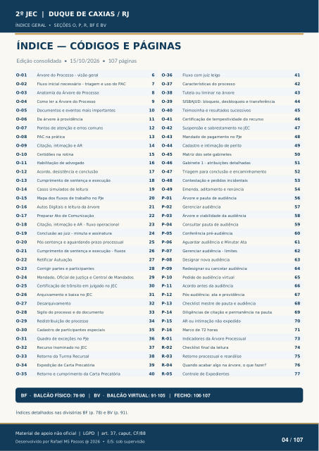

ÍNDICE GERAL • SEÇÕES O, P, R, BF E BV
ÍNDICE — CÓDIGOS E PÁGINAS
O-01 Árvore do Processo - visão geral
O-02
Fluxo inicial necessário - triagem e uso do PAC
O-03
Anatomia da Árvore do Processo
O-04
Como ler a Árvore do Processo
O-05
Documentos e eventos mais importantes
O-06
Da árvore à providência
O-07
Pontos de atenção e erros comuns
O-08
PAC na prática
O-09
Citação, intimação e AR
O-10
Certidões na rotina
O-11
Habilitação de advogado
O-12
Acordo, desistência e conclusão
O-13
Cumprimento de sentença e execução
O-14
Casos simulados de leitura
O-15
Mapa dos fluxos de trabalho no PJe
O-16
Autos Digitais e leitura da árvore
O-17
Preparar Ato de Comunicação
O-18
Citação, intimação e AR - fluxo operacional
O-19
Conclusão ao juiz - minuta e assinatura
O-20
Pós-sentença e aguardando prazo processual
O-21
Cumprimento de sentença e execução - fluxos
O-22
Retificar Autuação
O-23
Corrigir partes e participantes
O-24
Mandado, Oficial de Justiça e Central de Mandados
O-25
Certificação de trânsito em julgado no JEC
O-26
Arquivamento e baixa no JEC
O-27
Desarquivamento
O-28
Sigilo do processo e do documento
O-29
Redistribuição de processo
O-30
Cadastro de participantes especiais
O-31
Quadro de exceções no PJe
O-32
Recurso Inominado no JEC
O-33
Retorno da Turma Recursal
O-34
Expedição de Carta Precatória
O-35
Retorno e cumprimento da Carta Precatória
O-36
Fluxo com juiz leigo
O-37
Características do processo
O-38
Tutela ou liminar na árvore
O-39
SISBAJUD: bloqueio, desbloqueio e transferência
O-40
Teimosinha e resultados sucessivos
O-41
Certificação de tempestividade do recurso
O-42
Suspensão e sobrestamento no JEC
O-43
Mandado de pagamento no PJe
O-44
Cadastro e intimação de perito
O-45
Matriz dos sete gabinetes
O-46
Gabinete 1 - atribuições detalhadas
O-47
Triagem para conclusão e encaminhamento
O-48
Contestação e pedidos incidentais
O-49
Emenda, aditamento e renúncia
P-01
Árvore e pauta de audiência
P-02
Gerenciar audiência
P-03
Árvore e viabilidade da audiência
P-04
Consultar pauta de audiência
P-05
Conferência pré-audiência
P-06
Aguardar audiência e Minutar Ata
P-07
Gerenciar audiência - limites
P-08
Designar nova audiência
P-09
Redesignar ou cancelar audiência
P-10
Pedido de audiência virtual
P-11
Acordo antes da audiência
P-12
Pós-audiência: ata e providência
P-13
Checklist mestre de pauta e audiência
P-14
Diligências de citação e permanência na pauta
P-15
AR ou intimação não expedido
P-16
Marco de 72 horas
R-01
Indicadores da Árvore Processual
R-02
Checklist final da leitura
R-03
Retorno processual e reanálise
R-04
Quando acabar algo na árvore, o que fazer?
R-05
Controle de Expedientes
BF • BALCÃO FÍSICO: 78–90 | BV • BALCÃO VIRTUAL: 91–105
Índices detalhados nas divisórias BF (p. 78) e BV (p. 91). Edição consolidada • 15/10/2026 • 107 páginas BF · BALCÃO FÍSICO: 78·90 | BV · BALCÃO VIRTUAL: 91·105 | FECHO: 106·107
Ver também o infográfico original (página 4)
